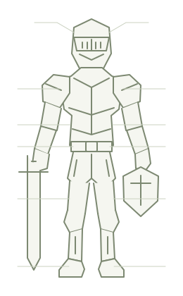

冒险记录
营地
领主与随行队伍
无名领主
/
等待交战
队伍正在营地休整
—
战斗结束保留当前生命
等待下一场战斗
掉落物品会在此短暂展示
领主与队伍
总战力
实时属性
随身装备 · 13 部位

冒险
探索地图 击败当前首领后，开放下一区域
营地建筑
未解锁
工坊 · 装备槽位强化
定向打造需要对应区域的工坊等级
未解锁
商栈 · 材料交易
队伍招募
部队构成
| 成员名称 | 战力 | 操作 |
|---|
冒险与恢复
普通怪和精英自动遇见、自动交战。战后生命不会补满。主动返营会停止冒险；自动撤退或死亡后可设置为满血自动出发。死亡损失当前金币的 2%，休整结束后在营地逐步回血。
首领与区域
战斗积累探索情报，洞察能加快发现首领。首领只接受手动挑战；刷怪时点击会直接转入首领战，保留当前生命，未击败的普通敌人不结算奖励。胜利解锁下一区域并返回营地。重复挑战有 20 分钟冷却。离线期间绝不会自动发起首领挑战；已手动开始的战斗可以在后台继续。
九项属性
掉落规则
基础概率：普通怪材料 16%、装备 8%；精英材料 36%、装备 22%。首领必掉材料和装备。贪婪按递减收益提高概率；传说、至宝更倾向来自精英和首领。
长期进度目标
参考每天累计挂机 8 小时、分三次整理营地：1～5 区目标约 5 天，6～10 区约 10 天，11～16 区约 15 天。没有强制等待天数；配置与在线时长会改变速度。这是设计目标，当前版本尚未通过完整 30 天玩家测试。
离线与存档
默认结算最多 8 小时，仓库每级增加 1 小时。离线使用相同战斗、受伤、死亡、恢复与招募规则。进度保存在当前浏览器；开发版使用独立存档。